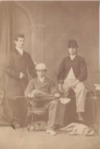

Beaubien-Perrault-Benington - Person Sheet
Beaubien-Perrault-Benington - Person Sheet

Occupationavocat
FatherSir Andrew Stuart (1812-1891)
MotherElmire Charlotte Aubert De Gaspé (1817-1899)
Spouses
Death2 Aug 1880, Québec, Québec20
Birthca 1846
FatherGeorge Benson Hall Jr (1810-1876)
MotherMary Jane Patterson
Marriage15 Apr 1869, Québec, Québec
No Children
Notes for Henry MacNab Stuart
Lawyer. Practiced first with his father, then settled in Victoria. No children.
252 In Quebec City, Lawyer, widowed, 37, with maid Malvina Martineau (26)
252 In Quebec City, Lawyer, widowed, 37, with maid Malvina Martineau (26)